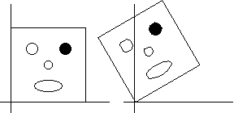

Counterclockwise rotation is done by positive angles.
Clockwise rotation is done by negaive angles.
Rotations are about the origin, the lower left corner of the figure in this example.
More general transformations use two angles, one for each axis. Unequal angles give rotation with some distorition. Here we consider only rigid rotations, measured by a single angle, theta.
|  |
| The figure at the right has been rotated 30 degrees counterclockwise, so theta = 30. |